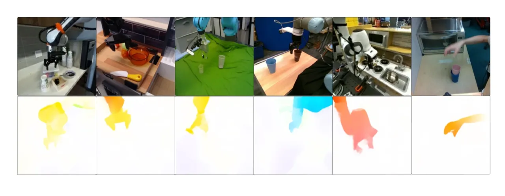
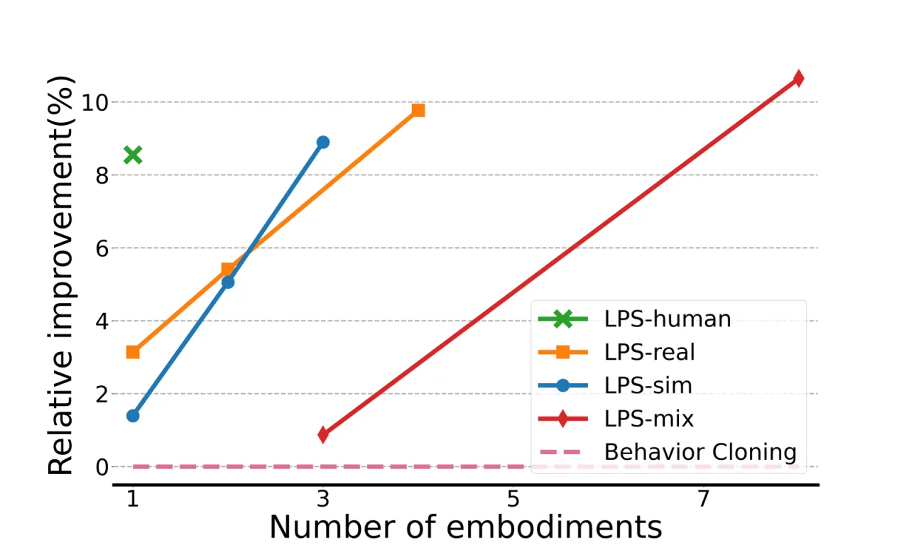
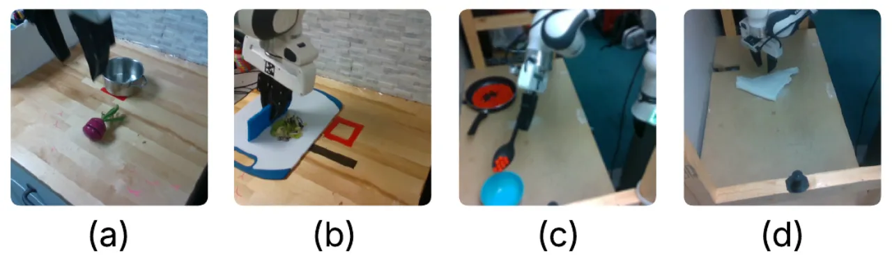
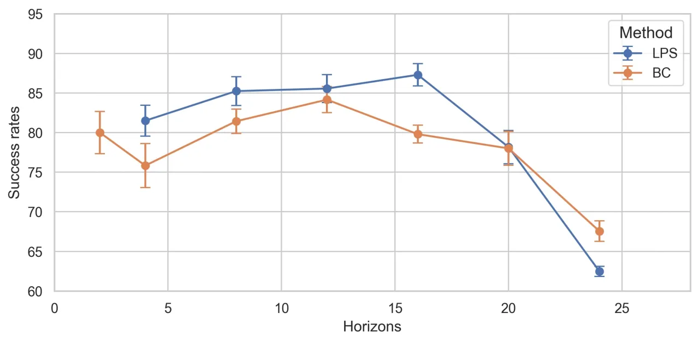

机器人视觉运动策略对大规模特定形态训练数据的依赖严重制约了其实际部署。本文提出 Latent Policy Steering (LPS)： 以光流（optical flow）作为形态无关的动作表征，在多形态跨域数据上预训练世界模型，再通过少量目标形态演示进行微调； 推理时借助世界模型对多条行动规划进行隐空间评估，引导 diffusion policy 选择最优动作。 真实场景下，LPS 以 30–50 条演示即实现相对行为克隆基线 70% 的相对提升。
收集特定机器人形态的大规模演示数据成本高昂，而现有跨形态数据集因动作空间不一致、形态差异大，难以被直接利用。 如何从已有多形态数据中提炼可迁移的"技能先验"，以极少量目标形态演示即可大幅提升策略性能，是本文的核心出发点。
"Skills performed across different embodiments produce visual similarities in motions that can be captured using off-the-shelf action representations such as optical flow."

LPS 分三步：① 以光流为动作表征在多形态数据上预训练视觉世界模型； ② 用少量目标形态演示微调世界模型并训练 Robust Value Function； ③ 推理时对 diffusion policy 采样的多条动作规划进行隐空间评估，选取价值最高的计划执行。
传统世界模型以具体机器人动作（如关节角度或末端位姿）为条件，无法直接跨形态迁移。 LPS 将光流替换为动作输入：卷积编码器将光流场压缩为 n 维向量（n 等于目标形态的动作空间维度）， 迫使网络捕获与形态无关的显著运动特征，同时抑制噪声和形态差异。 该设计使预训练数据可来自任意机器人甚至人类演示。
在获得少量目标形态（如 Franka）演示后，将光流编码器替换为归一化的机器人真实动作， 同时联合训练世界模型与价值函数。 价值函数需处理 distribution shift 问题——推理时策略访问的状态可能偏离训练分布。 为此，作者设计了Robust Value Function，同时在专家演示状态和策略访问状态上训练， 并引入 cosine similarity 奖励惩罚偏离专家轨迹的行为：
"rt:t+h′ = rt:t+h + (sim(st:t+h, st:t+h′) − 1) / 2"
其中 st:t+h 为专家隐状态序列，st:t+h′ 为策略在世界模型中展开的状态。 该奖励促使价值函数在 out-of-distribution 状态下仍能给出保守估计，避免高估偏差。
给定当前观测，从 diffusion policy 采样 B 条候选动作规划，规划长度为 h。 世界模型将每条规划在隐空间中前向展开，得到未来隐状态序列， 再由价值函数以加权平均（未来时刻权重更大）计算规划级价值。 执行价值最高的规划前 1 步后重新规划，实现滚动决策。

实验在两个场景下评估：① Robomimic 仿真（Lift / Can / Square / Transport）， 预训练使用 IIWA、UR5e、Kinova3 三种形态，目标形态为 Franka； ② 真实 Franka 机器人上的 4 个操作任务。 基线为行为克隆（BC），对比方法为 LPS-mix（使用混合多形态预训练数据）。

| 任务 | BC（30–50 条演示） | LPS-mix（30–50 条） | BC（60–100 条演示） | LPS-mix（60–100 条） |
|---|---|---|---|---|
| Put-radish-in-pot | 7/20 | 11/20 | 13/20 | 19/20 |
| Sweep-salad | 4/20 | 6/20 | 6/20 | 11/20 |
| Scoop-beads | 6/20 | 10/20 | 13/20 | 16/20 |
| Fold-towel | 0/20 | 2/20 | 9/20 | 13/20 |
| 平均 | 21.2% | 36.2% | 51.2% | 73.8% |
在 30–50 条演示下，LPS-mix 相对 BC 实现 70% 相对提升（21.2% → 36.2%）； 60–100 条演示下实现 44% 相对提升（51.2% → 73.8%）。
| 任务 | BC | LPS-mix |
|---|---|---|
| Lift | 82.0±6.2 | 84.4±10.8 |
| Can | 76.7±2.1 | 85.8±4.1 |
| Square | 44.8±6.5 | 49.0±6.4 |
| Transport | 25.8±1.6 | 34.6±3.6 |
| 平均 | 57.3% | 63.4% |
四个任务平均实现 10.6% 相对提升，预训练数据大部分来自真实世界场景而非仿真。
光流 vs. EEF 动作（Table III）： 以光流预训练的世界模型（LPS-sim flow，均值 62.4%）优于以末端位姿（EEF）预训练版本（59.1%）， 在 Square 任务上差距最显著（52.4% vs. 45.3%），验证了光流作为形态无关表征的优越性。
价值函数设计（Table IV，100 条演示无预训练）： 完整 LPS（均值 68.7%）优于 LPS-vanilla（65.2%）和 LPS-bootstrap（64.3%）， 而 BC 基线为 62.9%。分布偏移惩罚项对最终性能贡献最大。

光流无法可靠捕捉遮挡情况下的运动，例如机器人手臂遮住目标物体时， 流场噪声大幅增加，导致形态无关表征质量下降，进而影响世界模型预训练效果。
相同技能从不同摄像机角度观测会产生截然不同的光流模式， 限制了多视角或移动平台场景下的泛化能力。 此外，相机本身运动（如移动机器人）会引入额外的全局光流噪声。
LPS 需要策略能够生成多条多样化的候选动作规划（如 diffusion policy）， 在少量演示场景下单模态策略（unimodal policy）的多样性不足， 隐空间引导的改进效果极为有限。
如图 4 所示，horizon 超过 16 步后，由于 distribution shift 奖励信号的累积误差， 价值估计精度下降，LPS 性能出现退化，需谨慎选择规划长度超参数。